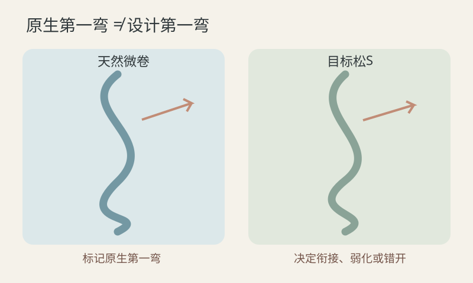
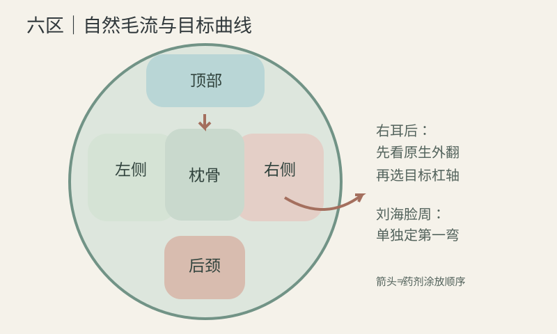
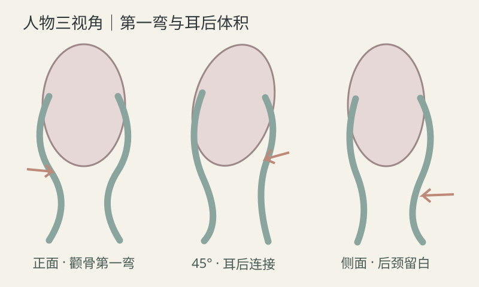

2026-11-19
【今日核心问题】原生微卷和目标法式松S为什么会在耳后、脸周形成两套互相冲突的弯度？新增判断：把“毛囊赋予的自然曲率、当前发干已有化学历史、拟设计的第一弯”分别记录，而不是把天然弯简单当作软化不足。
【第一层：原生形态与烫后形态的区别】同一个人顶部可能只有弱C，右耳后天然外翻，后颈自然有明显S；头发并非天生整头同向。自然卷的形成与毛囊发育、毛干皮质层细胞组成和空间结构有关。烫发是对已经长出的毛干施加化学和几何处理，不能改变毛囊继续长出的新生发的固有生长方向。旧烫段、染后段和新生段的曲线不可能仅凭相同杠径自动连续。
【内部结构】毛鳞片位于外层，参与表面保护、摩擦和水分传递；皮质层由角蛋白中间丝和相关蛋白构成，是弯曲、伸长和恢复的主要结构；部分发丝含髓质。二硫键是重要的共价交联，参与较持久的形状维持；氢键对水分敏感，参与吹整和复湿后的暂时性变化；盐键、离子相互作用及疏水相互作用也支持蛋白质组织。原生卷并非某种“局部天生还原程度”，不能凭原生弯度推算二硫键断裂率。
【空间曲线叠加】先固定头部自然姿态，在干态和统一复湿自然干后分别标记每区：原生根向、自然第一弯高度、凹凸方向、毛束最宽点。再画目标第一弯、主S及下摆。若耳后已有向外第一弯，拟排杠却在相同高度强制向内第一弯，就可能出现方向反转、局部鼓起或看起来像断层。先判定两道曲线是否需要衔接、减弱或错开；“视觉冲突”是设计候选机制而不是实验已经证明的必然结果。
【六种工艺变量】还原：在具体厂家允许的TGA、半胱胺或其他完整体系中，部分可接近二硫键发生变化；反应由有效成分、浓度、pH、配方缓冲、时间、温度及化学历史共同影响，单看pH不能推算药力，门店称CA时要核对实际成分。水：影响部分氢键、塑化与黏弹性，湿态看到的第一弯不等于自然干位置。张力与卷绕：杠径、发片厚度与宽度、有效杠面、提升角、杠轴、圈数和原生根向决定几何约束；强拉不能“纠正”新生发的自然卷。热与时间：仅按照实际产品及设备的完整兼容要求，设备温度不等于发芯温度，不当加热可能伤害毛发。干燥冷却：涉及水分迁移和暂时性结构松弛；玻璃化转变是材料学解释工具，绝不是通用安全热烫温度。氧化：按配套体系帮助部分交联重新形成，不能通过额外二剂修复已损伤发尾，也不能代替剪裁和流向设计。
【软化终点与发质边界】原生粗卷不意味着耐受一定高，染后中段和旧漂尾要单独评估。湿态异常伸长、撤力恢复差、发黏、断丝或头皮异常刺激是停止相关高风险化学与热处理的信号；门店所谓“软化60%”只是经验语言，不是二硫键实测比例。卷度应分别核对自然干、简单整理、24小时与数次复湿表现，不能只凭刚完成的一张照片判断持久。
【近七天核查】已优先检索2026年11月12日至19日关于原生卷曲、毛干结构、发束弯曲的公开研究；没有核验到可直接规定“中国顾客轻自然卷+法式松S的最佳药剂、卷向及安全热烫温度”的新真人对照试验。以下三项为有来源的基础研究和方法学研究，不等于门店处方。
【研究一｜2024-11-20首次发表｜原始三维影像】Claire van den Berg、Nonhlanhla P. Khumalo、Malebogo N. Ngoepe，《Quantifying whole human hair scalp fibres of varying curl: A micro-computed tomographic study》，Journal of Microscopy，DOI 10.1111/jmi.13365。核心结论：利用微CT重建不同天然卷曲毛发的三维几何与截面，发现低中卷类型内部差异值得重视，微CT对截面参数有效但无法在该分辨率下精确显示全部表面毛鳞片。证据强度中：真实毛纤维成像，样本及设备分辨率限制了外推。能支持：不能仅凭“微卷”一个标签假定整束每根发丝曲率相同。不能证明：天然微卷需要固定药力、杠径或某个安全温度。
【研究二｜2008-12-25在线／2009年4月刊载｜原始显微与皮质研究】Warren G. Bryson、Duane P. Harland等，《Cortical cell types and intermediate filament arrangements correlate with fiber curvature in Japanese human hair》，Journal of Structural Biology，DOI 10.1016/j.jsb.2008.12.006。核心结论：直发与弯曲毛纤维的皮质细胞分布、角蛋白中间丝结构存在与曲率相关的差异。证据强度中：显微观察直接，但特定样本与关联分析不能用于个体定量处方。能支持：原生弯曲不仅是表面吹整效果，涉及毛干结构。不能证明：某个局部毛流必然该向哪边排杠，也不能把观察到的结构相关性当成化学烫发安全指标。
【研究三｜2026-11-02｜原始方法适配实验】Leila Sorrells、Laurence Senak、Xu Kang等，《Methods adapted to evaluate products for textured hair: Shine, curl shrinkage, flexibility and consumer-perceived hair porosity》，International Journal of Cosmetic Science，DOI 10.1111/ics.70096。核心结论：研究提出在固定光照与湿度条件下，对天然高卷曲毛束的收缩表现、柔韧度和光泽分别测量。证据强度中：真实实验方法和数据，主要针对3/4型天然卷发，样本与设备具有特定性。能支持：比较弯度时要记录湿度、时间和整理方式，不能只看一张照片。不能证明：中国顾客自然微卷及化学松S的具体卷度、药剂参数和绝对持久率。
【证据分层】科研属于结构、影像和测量证据；真人化学安全参数必须服从具体产品与设备厂家说明；专业教材用于统一分区和卷绕基础术语；门店八步法及六区体系属于经验设计框架，须在公仔头与复盘中检验；不能把原创示意图当作实验结果，也不把独立AI编辑审核称为第三方安全批准。
【模拟教学案例｜人物虚构，无真实顾客资料】32岁女性，职场知性为主，希望有一点松弛浪漫感。脸型偏圆方，颧骨略宽，下颌角较明确；顶部稍平、后枕略平、颈部中短、肩宽中等。自然干发长位于锁骨下约9厘米，现为低至中低层次，后颈底线较厚。顶部发丝密度中等、发径细软，新生发的弯度弱C；左耳前密度偏低、发径细；两侧发径中等略硬；右耳后原生发根向外，约接近耳廓高度形成自然C转折；后枕密度高、发径偏粗，带自然松S；后颈密度较高，有向左上毛流。整体不是同一卷曲等级。发根约8厘米新生、较少化学处理；中段过去一年染棕两次，部分有旧烫史待核实；末端3厘米旧漂再染暗。顾客隔天洗头，经常自然干，偶尔夹板拉直刘海，愿意每天花3—5分钟整理。
【需求和参考图】参考照片为经过吹整的中长发法式松S：顶部弱C、颧骨外侧不过度蓬胀、下颌以下第一弯、锁骨附近较明显大S、后颈清爽。参考图仅有正面和右45度，缺自然干及背面。顾客说“自然，不要小卷，显脸小，但右耳后不要炸，洗完好打理”。
【初步诊断与最大风险】最大的设计风险不是“天然卷药力要更大”，而是右耳后原生外向C弯，与拟定的同高度内向第一弯方向冲突；后枕原生S与目标S相位不同，也可能造成层次断点。独立的化学风险是发尾旧漂再染，严禁以视觉同色推断耐受。先做干态三视角、统一复湿自然干的根向、第一弯和恢复观察，并确认每区真实染烫史。如果出现异常伸长、失弹、发黏或断丝，停止对应高风险处理。
【八步设计】①风格：自然知性、少量浪漫。②适配：圆方脸、平顶、平枕、中短颈、两侧不同原生根向。③长度：自然干锁骨下目标底线与安全有效长度。④特点：顶部有限支撑，颧骨处适度控制横宽，耳后不炸。⑤层次：顶部保留密度，后枕适度补圆，后颈低至中低层次温和释放重量。⑥刘海：偏分弱C、额角顺毛流。⑦卷度：下颌以下第一柔弯，锁骨附近主松S，右耳后优先流向过渡而非强制反向主卷峰。⑧打理：自然干与3—5分钟轻吹分别展示，不承诺参考照片可完全免打理。
【剪裁、有效长度与无药试排】先标记顶部支撑、颧骨最大宽度、目标第一弯、主S与自然干底线；检查旧漂尾段是否能保留，无法安全达到双S时改单条柔C。耳前少量保留覆盖，不因耳后外翘就过度削薄。右耳后在公仔头无药无热试排两种杠轴：与原生转折顺向连接，或者把主要弯度高度下移；分别观察45度是否出现突兀反折。左右无需机械镜像，但总体轮廓协调。
【药剂及流程】候选还原体系必须由具体厂家型号、有效成分、历史发质分类、禁忌、实际pH/药力说明和配套设备二剂共同决定。未给出产品就不假装精准指定TGA/CA浓度、涂放顺序、作用时间与软化终点。按厂家流程记录不同区首次接触、观察、实际停止、冲水及氧化时刻。冲水后记录持续滴水/均匀湿润/局部偏干的可见等级，不把它当实测含水率。发片厚度、宽度和杠面相适配，尾纸平顺不折尾，温和张力，杠径、提升角、卷入圈数与有效长度配套；卷2圈或2.5圈都不能保证两道S。热、干燥、冷却和氧化严格遵守兼容厂家体系；冷烫按其无额外加热完整流程；任何异常停止信号要优先处理。
【预期和补救】正面顶部柔和，颧骨旁不过分外扩，第一弯在下颌下；右45度耳后无硬反折，枕骨补圆不过大；侧面后颈留白，主S落在锁骨附近。拆杠后、自然干及轻吹分别核对。若右耳后炸：先排查天然毛流、第一弯冲突、杠轴、层次和整理，优先低风险调整；不能直接追加还原或补热。若旧漂尾失弹则暂停高风险化学服务并调整长度、目标和护理计划。
【设计不是把天然卷全部消除】原生弱C和目标大S可以形成层次关系，关键是弯度重心与人物适配。顶部微平可建立有限柔C，不宜为了支撑无限拔高；圆方脸颧骨略宽，可以适度收紧侧脸最突兀宽度，但需要保留耳前覆盖；第一弯放在下颌下方属于本案例候选而非唯一脸型答案。最大横向蓬松点可以在颧骨下或耳后下方，与锁骨处最大卷度不必同高。
【正面】看顶部高点、颧骨附近最大宽度、两侧第一弯是否形成对称的视觉节奏而非机械对称。
【45度】看右耳后天然外向根向是否与目标弯度反向叠加；观察侧区到枕骨是否突然鼓起。左右毛流不同可以调整杠轴和层次，但最终形态要协调。
【侧面与背面】后枕稍平可以适度补圆，中短颈需要控制后颈下摆重量；主卷度不全压在肩线。背面观察两侧卷峰与后枕过渡、后颈流向。若换成长颈窄肩、发量少或更长脸，体积重心应重新设计，没有唯一脸型公式。
【五个坐标加一个自然坐标】记录顶部支撑高点、最大横向蓬松点、设计第一弯、主卷峰、自然干底线；额外标记“原生第一弯”，比较其与设计第一弯是否同向或错位。
【图一：天然曲率与设计目标的衔接】左侧雾蓝是原生弱C/S，右侧灰绿是拟定法式大S；陶土箭头指出第一弯同向衔接或反向交界。看什么：先确认原生第一弯在哪里，再决定目标主S何处起，不将天然卷的结构来源误解为化学软化程度。示意不是真实毛发微CT。
【图二：六区原生方向与目标杠轴】顶部、左侧、右侧、枕骨、后颈、刘海脸周分别标记自然根向和几何任务；右耳后以陶土色突出可能冲突区。看什么：与原生方向的衔接比机械镜像更重要。箭头只表示概念流向，不是药剂涂放顺序；正式六区边界以门店标准图为准。
【图三：人物正面、45度、侧面】灰粉人物轮廓标记顶部高点、颧骨、下颌第一弯、耳后鼓点、后颈留白及锁骨主S。看什么：人物轮廓是否被自然卷和人工卷的叠加改变。非真人烫后证明。
三张均为本次AI编辑原创无外链静态SVG、暖米白背景与深炭灰文字，不含第三方照片、真实顾客或实验结果。



【仅供公仔头无药剂、无加热几何练习；不是任何真人安全配方】杠径是工具外径；提升角以局部头皮切线为0度参考。顶部候选外径30—34毫米、提升角20—40°，目标柔C、顺原生根向轻支撑，注意不炸根；枕骨28—32毫米、15—35°，目标适度补圆、连接顶部侧后；左右两侧30—36毫米、10—30°，目标下颌以下第一弯，右耳后可与左侧采用不同杠轴；后颈可不卷或0—15°弱C练习，沿原生毛流控制下摆；刘海脸周按实际有效长度和额角根向决定弱C或不卷。
【宽厚、圈数与张力】分开记录发片横向宽度、厚度、卷杠有效工作面和有效卷入长度，保证发丝平铺、尾纸不折尾、张力温和，不用强力拉直原生卷来追求规则圈数。圈数必须由实际发长、杠径、目标第一弯、已有自然弯共同决定，不套用固定值。两侧分区交界的第一弯高度需要视觉连续，也允许根据人物风格形成有意的错位。
【纠错】压根查落杠点与夹具；炸根查自然根向、提升角和原生根弯；折痕查尾纸、发尾折返与局部张力；发尾外翻查原生毛流、杠轴与衣领；断层查原生第一弯与设计第一弯的交界；流向冲突查耳后和枕骨的杠轴方向；后颈堆积查底线重量及主S高度。不能把几何冲突归咎于药力不足直接补药补热。
【先问五个问题】一“自然一点是洗后自然干就有松S，还是可以每天轻吹几分钟？”二“不要太卷是不要密集小卷，还是希望第一弯也很淡？”三“显脸小主要在意颧骨、下颌还是耳后鼓起来？”四“以前洗完自然干，右耳后是否一直会外翻？和染烫前一样吗？”五“哪些长度漂染烫过，如果安全有效长度不足，能否接受单C或低风险非化学造型？”
【模拟门店对话】顾客：“我右耳后总是翘，烫一个整头大S能压住吗？”发型师：“先看你原来那里是向外生长，还是旧烫后才翘；它和我们计划的第一弯会不会撞在一起。”顾客：“我只想自然、不要太卷，还要显脸小。”发型师：“顶部保留柔和支撑，颧骨旁边不过分鼓，第一弯从下颌下面开始。右耳后会独立安排流向，不必和左边机械镜像。”顾客：“是不是要用更强的药水把天然弯拉顺？”发型师：“不能只因天然卷就提高药力，先看真实烫染史、厂家适用条件和耐受。必要时我们调整设计，不为了参考图强行处理旧漂发尾。”顾客：“照片里没看见耳后。”发型师：“所以还需要看45度和背面，完成后也会分别展示自然干和简单吹整。”
【可复制话术】“你的天然毛流本身就有曲线，新的大S不能只按参考图整头复制。我会先标记自然第一弯、计划第一弯和主S，再用八步法确定整体风格、长度和层次，用六区把顶部、脸周、耳后、枕骨、后颈分配好。真正药剂和热处理以具体厂家说明和分区发质为准；耳后外翘先判断方向及剪裁，不通过盲目补药补热处理。”
【先练五题，后看完整参考】设同一公仔头左耳后天然弱C向内、右耳后天然C向外，计划锁骨松S；同样杠径在两侧机械镜像排列。完成无药几何练习后，右45度出现明显反折。
【题一】能断定右侧药力不足吗？【答案】不能。没有任何化学处理，先查天然根向、原生第一弯、目标第一弯与杠轴交界。
【题二】两个耳后是否必须用同一卷向？【答案】不必。八步决定统一的外观目标，六区可以为了不同原生毛流采用不同技术路径，在最终45度轮廓中实现协调。
【题三】看到天然卷更强，能否直接选择更高pH？【答案】不能。天然曲率不是安全耐受测量，pH单项不是药力。还原体系必须依据具体产品、化学历史和现场停止信号判断。
【题四】为什么固定干湿状态和拍摄机位？【答案】水分、毛束排列与观察方向都会改变第一弯的视觉位置。不同条件下的照片不能直接作为化学反应差异证据。
【题五】旧漂发尾出现明显湿态失弹，仍要实现两道S怎么办？【答案】停止该段进一步高风险处理，重新评估安全有效长度，必要时改成单柔C或非化学造型，不用加强药力补偿。
【完整思考路径】先读真实毛流与化学历史→标记原生第一弯→人物风格八步确定第一弯/体积/长度→六区逐区决定顺向、错开或弱化→公仔头无药试排→具体厂家完整工艺与安全判断→自然干、45度、24小时及复湿观察。不是背诵左右镜像或统一配方。
【低风险离体毛束单变量实验：仅改变两束天然弱C毛束的排列朝向】目的：验证一束向外、另一束向内时，两束相邻排列与同向排列，是否产生可重复的45度体积、第一弯交界差异。不是测试化学损伤，不在真人顾客头上做高风险实验。
材料：同来源、自然干下已有弱C曲线、同长度发径与历史尽量相近的离体毛束8对；无热软夹、刻度背景、固定机位手机、常温清水、温湿度计、吸水纸、计时器。
唯一主动变量：两束的相对弯曲朝向。A组4对两束凹凸同向，B组4对凹凸相对；使用同样的起始发长、毛量、根端间距、固定高度、无拉力状态、室温湿度、机位及拍摄距离。改变朝向可能同时改变发丝接触与体积分布，不能说单独测得角蛋白结构。
步骤：①逐对编号和随机分组；②在一致自然干状态记录两束各自第一弯；③以松夹固定根端、不强拉，按A/B朝向排列；④记录正面与45度最大宽度、交界反折是否可见、主卷峰位置；⑤自然放置24小时复拍；⑥统一清水复湿、轻去滴水、自然干，重复两轮拍摄；⑦保留无差异、反向结果与异常。
【记录表｜全部待测】A01—A04：同向；B01—B04：相对。每对分别填写初始第一弯｜排列后45度宽度｜交界折点｜24小时｜复湿1｜复湿2｜环境与异常。尚未实施，不报告任何结果。
【转化标准】如多次重复出现稳定差异，把原生第一弯、目标第一弯、左右杠轴方向及45度交界检查纳入公仔头日常练习；若差异不稳定，照样保存图片和记录。实验不能决定真人药剂pH、浓度、加热温度、实际耐受或烫后持久率。
【一个原理】天然曲率与化学重塑后的目标C/S是不同来源的曲线，毛流、原生第一弯和设计第一弯必须共同考虑；相同杠径不保证左右同样的空间结果。
【一个错误】看见耳后自然外翘就判断药水弱，整头机械镜像排杠，或未经检查强行提高药力来“压住”原生卷。
【下次重点观察】在公仔头上分别标出左、右耳后原生根向及第一弯，再用无药试排比较同向和相对卷向，固定45度、24小时及两轮清水复湿记录。